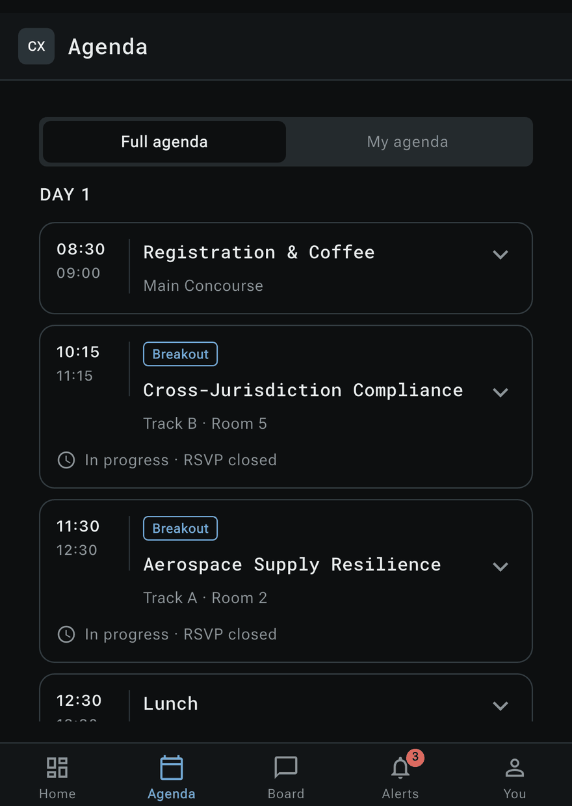

The programme, as it stands today
AgendaEvery session, speaker, track and room for the three days, with a My agenda view of the sessions you have chosen. When the organisers move a session, the agenda updates itself, and the meetings ConvergX arranges for you sit alongside it.